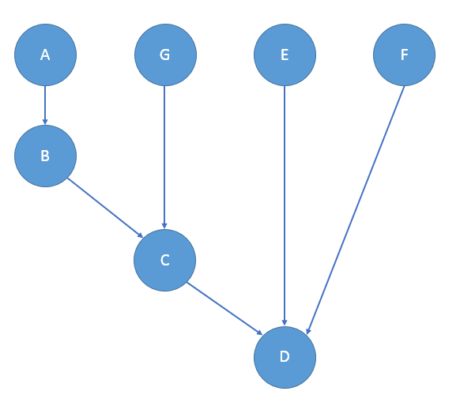

Use TBB to Generate Dynamic Dependency Graph For Computation
Table of Contents
1 Overview
TBB's flow graph provides a way to do flow-based programming. For problems which can be described as a dependency graph, a flow graph provides a clear interface to describe the problem, with good performance and scalability across multiple CPU cores.
Typical TBB flow graph code looks like below:
using namespace tbb::flow; int main() { graph g; function_node<int,int> f1( g, unlimited, [](const int &i) { return 2*i; } ); function_node<float,float> f2( g, unlimited, [](const float &f) { return f/2; } ); join_node< flow::tuple<int,float> > j(g); function_node< flow::tuple<int,float> > f3( g, unlimited, []( const flow::tuple<int,float> &t ) { printf( "Result is %f\n", std::get<0>(t) + std::get<1>(t)); } ); make_edge( f1, input_port<0>( j ) ); make_edge( f2, input_port<1>( j ) ; make_edge( j, f3 ); f1.try_put( 3 ); f2.try_put( 3 ); g.wait_for_all( ); return 0; }
Example taken from tbb::flow::join_node documentation. 1
2 Dynamic Graph
The example above is quite simple, using a predefined computation flow graph. However in reality, the original graph usually is dynamically created somewhere, especially when trying to adapt TBB to a legacy system, and we will need to create the flow graph at runtime:
using fnode = tbb::flow::function_node<msg_t, msg_t>; void computeFlowGraph(const std::vector<Node*>& nodes, const msg_t& computationParam) { std::vector<fnode*> fnodes; std::unordered_map<Node*, fnode*> nfmap; tbb::flow::graph g; for (auto n : nodes) { // not capturing *n directly to avoid copying auto f = new fnode(g, n->getConcurrentCount(), [=](const msg_t& p) { return (*n)(p); } )); fnodes.push_back(f); nfmap[n] = f; } for (auto n : nodes) { for (auto p : n->getParents()) { tbb::flow::make_edge(*nfmap[p], *nfmap[n]); } } // get all the initial function nodes and start computation std::vector<fnode> initials = getInitialNodes(nfmap); for (auto fn: initials) { fn->try_put(computationParam); } g.wait_for_all(); deletePointerVector(fnodes); }
Because the topology is not known until we create the graph, the TBB flow graph nodes can only be placed on the heap so they will remain valid till the end of the computation.
3 Message Aggregation
Everything in TBB is fine and dandy, except the function_node might not be the one you expect:
You are expecting a node to spawn only one task after receiving one message from everyone of its parents,
not spawn one task per message received from any parent.
The node needs to wait for all its parents to finish processing their message first.
There is a join_node looks to be an interesting candidate to solve this,
but on inspection it's still not the expected one: the message type is of a
fixed empty class continue_msg, and there is no way to pass any extra
information through the join_node.
We see that actually no node type can pass extra information while waiting for all its parents at the same time. How to resolve this problem?
4 Pipeline
TBB provides another pattern called pipeline. 2 It simulates an assembly line which contains several processing stages. Only after a stage finishes its work, can the next stage start. Each stage can process independent input concurrently.
One constraint of tbb::parallel_pipeline is that TBB doesn't support non-linear pipelines. 3
This may seem to reduce the parallelism,
however it only affects the latency since all of the stages can always be processed in parallel.
To express a complex pipeline as a linear one, sort the stages.
However there is still a limitation of pipeline: Before a message can be passed to a child node, we need to aggregate all messages from its parents. Pipeline cannot deal with this situation.
5 Merge Node
To solve the "1 task per N messages" problem, all parents' messages should to be
merged into one, then passed onto the child function_node.
The general idea is like this:
join_node<tuple<msg_t...>> \rightArrow function_node<msg_t, msg_t>
From the interface we can tell join_node is lightweight that only gathers the
input from its parents into a tuple then passes the tuple to its children.
If we chain the join_node with a function_node, there should be little cost.
But here comes another problem: How to store these nodes of different types. The entire graph is created dynamically, and all nodes need to be kept alive before computation finishes. Take below topology for example:

auto *afnode = new function_node<msg_t, msg_t>(...); auto *bfnode = new function_node<msg_t, msg_t>(...); auto *cjnode = new join_node<tuple<msg_t, msg_t>>(...); auto *cfnode = new function_node<msg_t, msg_t>(...); make_edge(*cjnode, cfnode); auto *djnode = new new join_node<tuple<msg_t, msg_t, msg_t>>(...); auto *dfnode = new function_node<msg_t, msg_t>(...); make_edge(*djnode, dfnode);
As we can see from above code, join_node which join different number of nodes
are of different types. We cannot put them into a std::vector<join_node<...>*>
to keep them alive until the end of computation.
Imagine the graph can be rather complicated where a node can have at most 10 parents! Either there will be many node vectors corresponding to each node type, or we have to find another way to erase the type of each node and restore the type information later for making edges and destruction.
Suppose there is a merge_node which will wrap a join_node and connect it to a function_node.
These nodes above will be: (Nodes E & F omitted)
auto *A = new function_node<msg_t, msg_t>(...); auto *B = new function_node<msg_t, msg_t>(...); auto *C = new merge_node(new join_node<tuple<msg_t, msg_t>>(...), new function_node<msg_t, msg_t>(...)); auto *D = new merge_node(new join_node<tuple<msg_t, msg_t, msg_t>>(...), new function_node<msg_t, msg_t>(...));
6 Erase/Restore Type Information
In above example, the type of a node is related to how many parents it has.
If you remember the old C trick: every pointer can be converted to a void*,
and convert back to a proper type. Using this trick, we can keep the pointer
to the join_node as a void*. Only convert it to the correct type when needed
(i.e. making edge and inside destructor) by doing a runtime dispatch based on
how many parents a node has.
template <typename msg_t, typename merge_t> class merge_node { const int n_parent = 0; void* jnode = nullptr; void* fnode = nullptr; merge_t merge; public: template <typename Body> merge_node(tbb::flow::gaph& g, const Body& body, int n_parent); ~merge_node(); }; template <typename msg_t, typename merge_t> template <typename Body> merge_node<msg_t, merge_t>::merge_node(tbb::flow::graph& g, size_t concurrency, const Body& body, int n_parent) : n_parent(n_parent) { if (n_parent <= 1) { fnode = new function_node<msg_t, msg_t>(g, body); } else { switch (n_parent) { case 2: { auto* jn = new join_node<tuple<msg_t, msg_t>>(g); auto* fn = new function_node<tuple<msg_t, msg_t>, msg_t>(g, concurrency, [=](const tuple<msg_t, msg_t>& msgs) { return body(merge(msgs)); }); make_edge(*jn, *fnode); jnode = jn; fnode = fn; break; } // case 3 and the rest is similar to case 2 } } } template <typename msg_t, typename merge_t> merge_node<msg_t, merge_t>::~merge_node() { assert(jnode); switch (n_parent) { case 0: case 1: assert(fnode && !jnode); delete reinterpret_cast<function_node<msg_t, msg_t>*>(fnode); return; case 2: assert(fnode && jnode); delete reinterpret_cast<function_node<tuple<msg_t, msg_t>, msg_t>*>(fnode); delete reinterpret_cast<join_node<tuple<msg_t, msg_t>>*>(jnode); return; // case 3 and the rest is similar to case 2 } }
Of course you can use macros to remove the many duplications here. For the complete implementation, please refer to mergenode sources.
7 Known Limitations
Because TBB doesn't support join_node with more than 10 parents, merge_node
doesn't either. But you can always have a workaround by creating an intermediate
node that merge 0~9 nodes and merge its output with the rest 10~N nodes.
However, usually this number of parents would indicates a bottle neck in the graph, and probably a poor graph design.
This code has been found with several bugs due to carelessness. So be careful and use it as a POC only.
8 Further Improvements
Sometimes your function node will not always pass a message to the child nodes.
Then you probably want to use the tbb::flow::multifunction_node so whether pass
a message to child nodes can be controlled. The implementation is pretty much the
same with a few tweaks. 4
Footnotes:
tbb::flow::join_node, https://www.threadingbuildingblocks.org/docs/help/reference/flow_graph/join_node_cls.htm
Non-Linear Pipelines, https://www.threadingbuildingblocks.org/docs/help/tbb_userguide/Non-Linear_Pipelines.htm
tbb::flow::multifunction_node, https://www.threadingbuildingblocks.org/docs/help/reference/flow_graph/multifunc_node_cls.htm